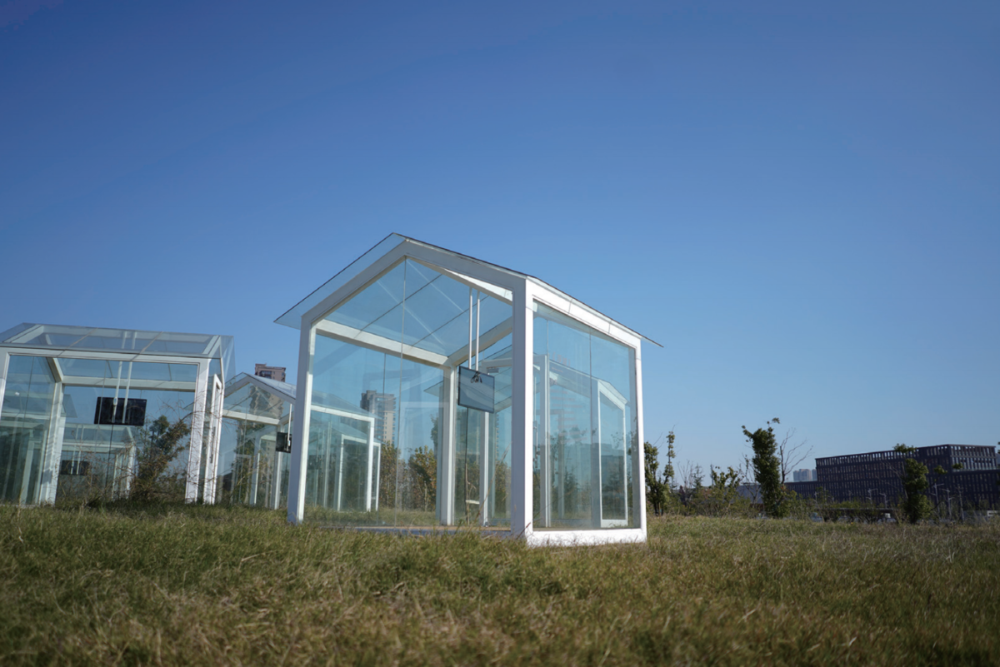
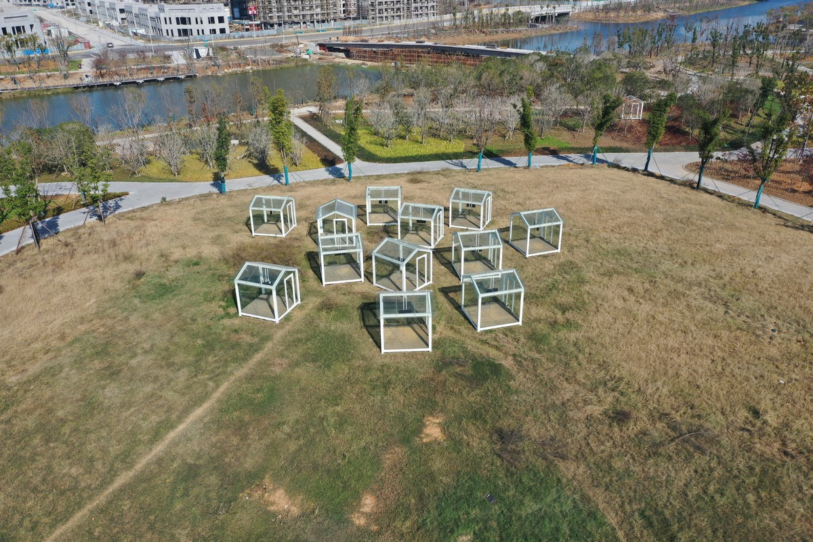
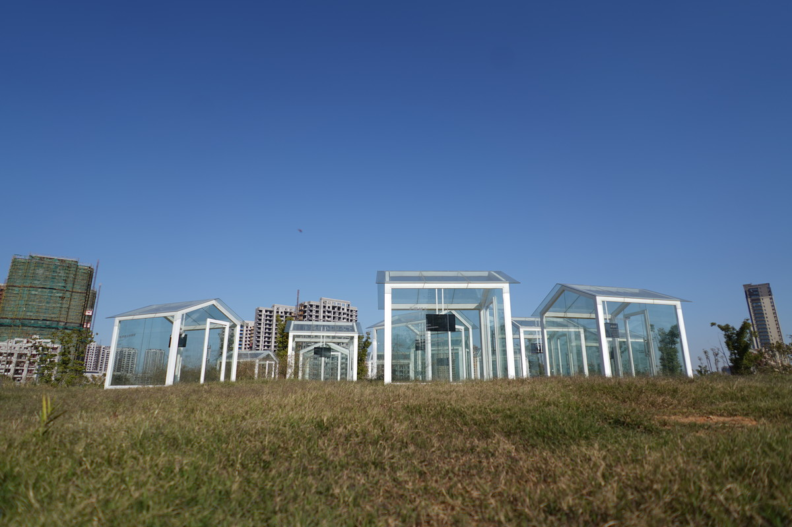
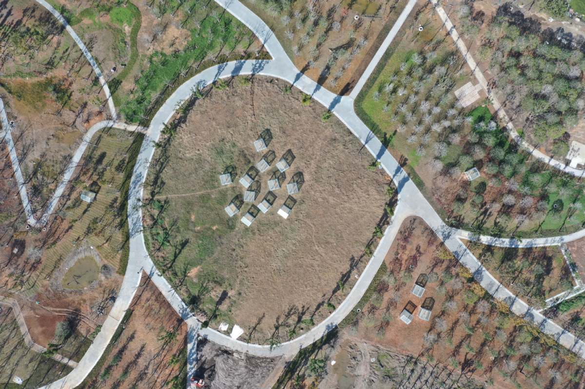

日日夜夜 | DAY AND NIGTH

方钢，玻璃，木板，平板电视和音箱，337x320x320cmx17，2021
Square Steel, Glass, Wood, flat screen TV and Speakers, 337x320x320cmx17, 2021
石玩玩设计了17个玻璃房子，这些玻璃房子组成了一个开放的村落。在展览期间，邀请了17位艺术家，在这些玻璃房子里展示了他们的在地创作。展览结束以后，这些玻璃房子将作为开放式美术馆，继续提供给年轻的艺术家。
Shi Wanwan has designed 17 glass houses that form an open village. During the exhibition, 17 artists were invited to display their video works in these glass houses. After the exhibition, the glass houses will continue to serve as an open gallery for young artists.

梦无界——2021（中国·宁波）杭州湾新区第三届国际公共艺术邀请展，宁波
Dreams Unlimited—2021 The 3rd International Public Art Invitational Exhibition of Hangzhou Bay New Zone , Ningbo, China

梦无界——2021（中国·宁波）杭州湾新区第三届国际公共艺术邀请展，宁波
Dreams Unlimited—2021 The 3rd International Public Art Invitational Exhibition of Hangzhou Bay New Zone , Ningbo, China

梦无界——2021（中国·宁波）杭州湾新区第三届国际公共艺术邀请展，宁波
Dreams Unlimited—2021 The 3rd International Public Art Invitational Exhibition of Hangzhou Bay New Zone , Ningbo, China